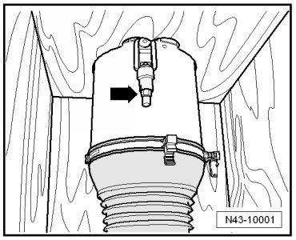
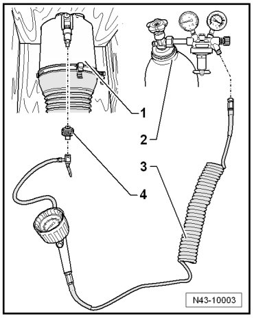
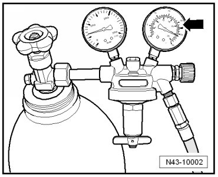
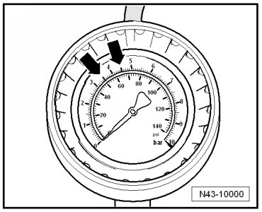

Air Spring Damper, Filling
Air Spring Damper, Filling
Special tools, testers and auxiliary items required
• Adapter (T10157/1)
• Air suspension strut charger (VAS 6231)
• Steel gas cylinder filled with Argon or Corgon, not depicted
• Air spring shock absorbers are supplied as replacement parts with a minimum pressure. By sitting in storage for extended periods this pressure can diminish (just like a tire). This minimum pressure must be checked and if necessary restored by recharging before air spring shock absorber is removed from the packaging. If air spring shock absorber is removed from the packaging without this checking/recharging, this may cause indentations or kinks to form in the dust boot before it reaches its normal shape. These indentations lead to preliminary damage and may lead to premature failure.
- Remove the cover from the packaging.
- Remove union bolt - arrow - from the residual pressure holding valve.

- Close the valve of the steel gas bottle.
- Become familiar with the relevant rules for the prevention of accidents for pressurized containers and technical gases.
- Connect the air spring filler unit (VAS 6231) and adapter (T10157/1) as shown in the illustration.

1. Air spring shock absorber in packaging
2. Steel gas bottle for argon, corgon with gauges
3. Air spring filler unit (VAS 6231)
4. Adapter (T10157/1)
- Set flow rate limiter gauge to 2.0 L/min - arrow -.

- Now fill gas into air spring shock absorber using several individual pressure bursts.
The display only shows a correct pressure if the back pressure of the residual pressure retaining valve is overcome. The back pressure is approximately 3.5 bar. The air spring shock absorber is sufficiently filled with gas when the pressure has reached 3.5 to 4.5 bar.

- When charging, make sure that pressure does not rise above 4.5 bar.
- Remove air suspension strut charger (VAS 6231) from adapter (T10157/1), this dissipates the gas above a pressure of 3.5 bar.
Minimum pressure is reproduced, air spring shock absorber can be removed from packaging.
- Install air spring shock absorber. Refer to --> [ Air Spring Damper ] Air Spring Damper.
- After performing a road test, access load level, then normal level using level control button (E388).
Most of the gas will be replaced with the filtered air from the air supply unit once the suspension has moved up and down to these settings.